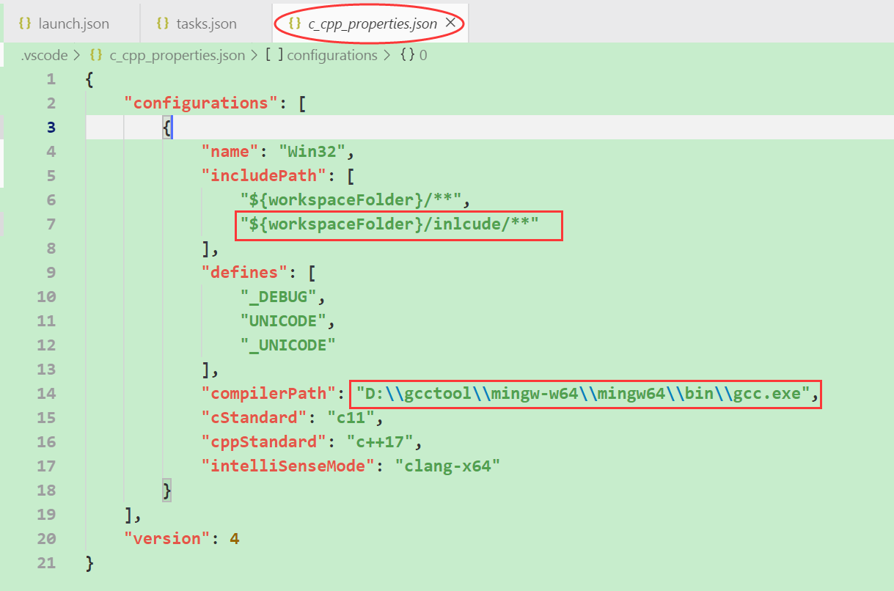

[TOC]
vscode使用相关
配置c/c++环境
- 安装vscode。
- 创建空的工程文件夹，选中文件夹右击"Open With Code"打开。
安装vscode插件： C/C++ 和C++ Intellisense。
创建工程目录。
配置启动参数： launch.json。
配置项改动点如下：
Ctrl+Shift+P打开命令面板，配置当前任务项： tasks.json。
配置项改动点如下：
Ctrl+Shift+P打开命令面板，配置c/c++参数： c_cpp_properties.json。
配置项改动点如下：

编辑并打开.cpp文件，Ctrl+F5执行验证。
c++自动提示功能
c++自动提示功能需要安装插件：
C/C++ 和C++ Intellisense
问题：安装C++ Intellisense执行若干次函数跳转，会导致c盘空间暴涨
C:\Users\Administrator\AppData\Local\Microsoft\vscode-cpptools\ipch占很大空间，
解决办法：
删除该文件夹
在settings.json中增加配置：
"C_Cpp.intelliSenseCacheSize": 0,
"C_Cpp.intelliSenseEngineFallback": "Disabled"
配置python环境
- 安装vscode、python、python插件（在插件列表中搜索python选第一个安装）。
设置启动配置项launch.json（同上），参照下图修改：
添加用户设置。写一个python文件，当执行的时候，会提示选择python解释器'Select Python Interpreter',点击选择后，会生成一个settings.json文件，参照下图修改：
vscode快捷键
Ctrl + Shift + P # 打开全局命令面板
Ctrl + P # 打开最近打开的文件
Ctrl + ` # 打开终端
选中 + tab键 # 向右缩进4格
选中 + shift + tab # 向左缩进4格
选中 + Ctrl + \ # 多行注释
选中 + Ctrl + \ # 取消多行注释
Ctrl + 鼠标单击 # 跳转到函数定义处
Ctrl + Alt + Backspace # 回退到上一个位置：设置->键盘快捷方式，自定义快捷键
设置flake8最大字符限制
- 自定义flake8语法检验时每行最大字符限制
- 命令行输入 flake8 --help，查看flake8的参数设置，其中有一项是--max-line-length=n 每行最大字符数
- 修改vscode的配置 setting.json，增加： "python.linting.flake8Args": ["--max-line-length=248"]
win7下搭建git环境
前提：本地已安装git客户端。
1.信任关系、全局配置
建立信任关系
- 打开vscode终端（自带终端也可以，主要是vscode配置的powershell更好用~~），进入home目录：cd ~
- 查看是否有.ssh目录，没有则创建：cd ~/.ssh
- 生成ssh公钥和私钥（id_rsa和id_rsa.pub）：ssh-keygen -t rsa -C "cbj@163.com"
- 将公钥（id_rsa.pub）添加到git服务器端（settings->ssh keys->add key）
- 测试是否添加成功 ssh git@github.com
配置全局的name和email
打开vscode终端，输入如下命令：
git config --help git config --global user.name "cbj" git config --global user.email "cbj@163.com" # 说明：配置用户名和密码主要是用于记录每次提交接下来就可以用git进行版本控制了
首次提交，进入本地代码目录：
git init # 建立git仓库 git add . # 本地文件添加到仓库 git commit -m "first commit" # 提交到本地仓库 git remote add origin https://github.com/cbj0304/StudyNotes.git # 将本地仓库关联到github上 git push -u origin master # 上传到远端仓库
2.常用Git命令
查看本地分支和远程分支
git branch -a创建名称为test的分支，并切换到这个分支
git checkout -b test==git branch test && git checkout test把分支推到远端
git push origin test删除本地分支test
git branch -d test删除远程分支
git branch -r -d origin/branch-namegit push origin :branch-name（冒号前面的空格不能少，相当于一个空分支push到server上）提交分支修改到远程
git push origin test:branch01// 提交本地test分支作为远程的branch01分支git push origin test:test// 提交本地test分支作为远程的test分支（:test可省略）从远端获取master最新版本并merge到本地
git pull origin master从远端拉取最新master版本，不会自动merge
git fetch origin master
终端shell
vscode可配置的终端：cmd、powershell、bash，这里我用的是powershell。
# powershell别名设置：
# 查看别名：
$ Get-Alias
# 设置永久生效的别名：
$ profile
# D:\用户目录\我的文档\WindowsPowerShell\Microsoft.PowerShell_profile.ps1
$ vim Microsoft.PowerShell_profile.ps1
# 编辑以下内容：ls已经是别名了，先删除再设置；设置ll别名。
function getFileName{
Get-ChildItem -Name
}
Remove-Item alias:\ls
Set-Alias ls getFileName
Set-Alias ll Get-ChildItem
其他
- 代码路径中有中文时，经常编译不过，这时候需要把代码放到没有中文的路径中。